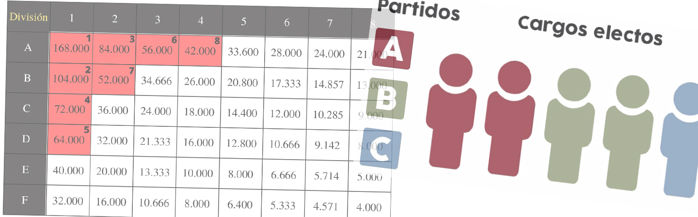

El cual es el sistema que rige en mayoría de países para ubicar en cada banca los miembros de los partidos políticos que se estarán disptutando el poder en las elecciones de turno.
Para ello se realiza un sistema complejo que da lugar a las bancas o escaños del congreso.
De esta forma la sociedad tendrá una herramienta gratiuta y 100% accesible para pre-calcular en una hipotética situación o que quieran verificar la credibilidad del estado en el correcto cálculo del mismo.
Espero les sea una herramienta útil que puedan compartir para uso didáctico, personal, profesional o por sola curiosidad.